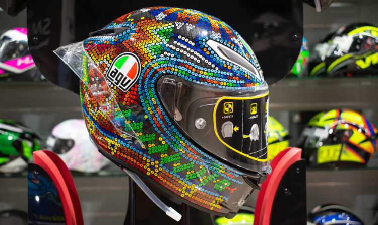
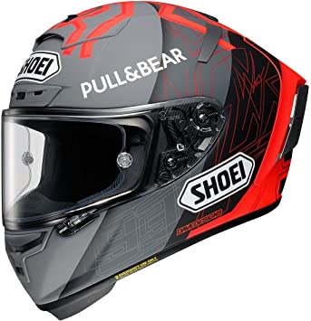
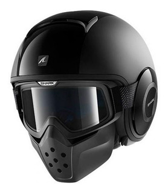
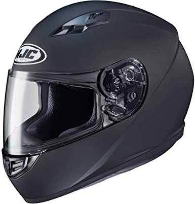
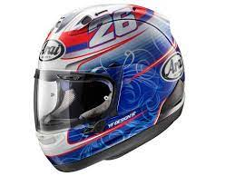
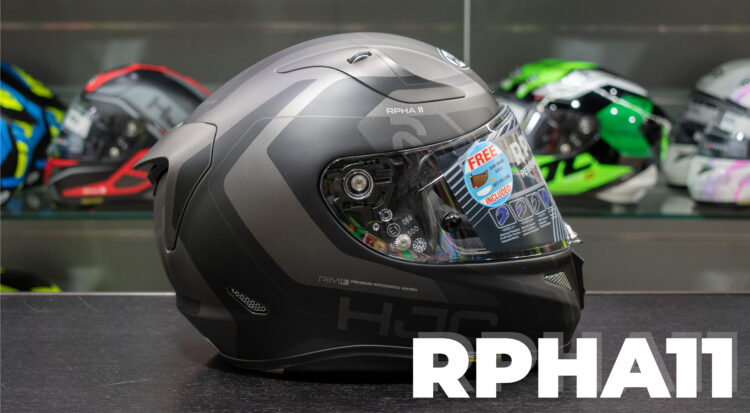
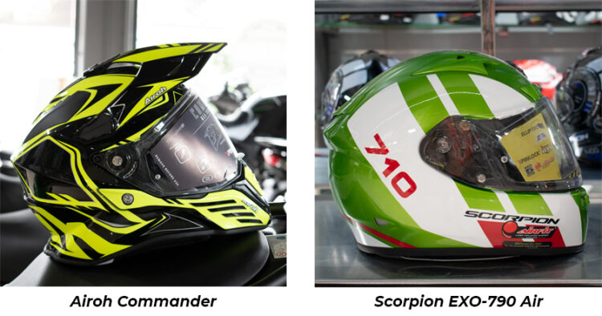
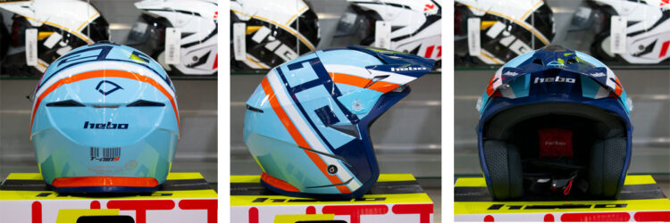
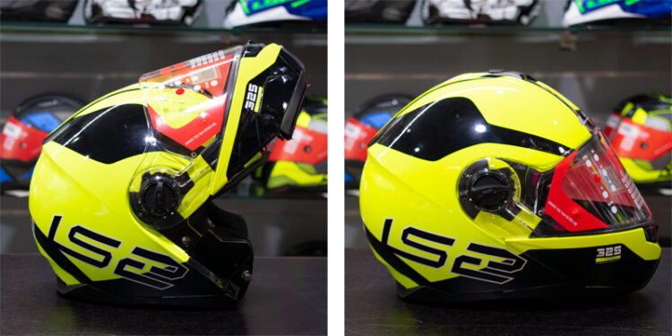

| --Catálogo De Defensas-- | |||||
| AGV Pista GP R 
En esta comparativa de cascos de motos, el rey es el Pista GP R de la marca italiana AGV.
Un casco integral diseñado para la competición por los mejores profesionales. ¿Una de sus
diferencias clave? Incorpora un nuevo sistema de hidratación, por lo tanto, es perfecto
para cuando te encuentras en el circuito. Por otro lado, su completo sistema de ventilación
ha sido desarrollado gracias a la experiencia de MotoGP. Su calota está fabricada al 100% en
fibra de carbono, uno de los materiales más resistentes del mercado.
|
Shoei  Shoei es conocido por producir cascos caros y bien construidos en el extremo superior del mercado. Todo lo cual se muestra en su increíble clasificación en nuestra revisión de seguridad. En los 13 cascos Shoei han logrado obtener puntajes muy altos, en sus cascos X-Spirit III y el Ryd obtuvieron los máximos. |
Shark  Shark es una marca francesa con buena calidad. Sharp ha probado 7 cascos
y ha logrado una puntuación media de 4/5 estrellas. Lo cual no es una sorpresa porque sea cual sea
el estilo de casco la marca obtuvo una puntuación de 4 estrellas, lo que es un rendimiento increíble. |
|||
| HJC 
HJC se especializa en cascos de menor precio, por lo que no tiene que hacer un gasto
mayor para tener una excelente protección. En general, sus 6 cascos probados más
recientemente obtuvieron buenas calificaciones de confiabilidad.
|
Arai ´
Arai Helmet, es una empresa japonesa que diseña y fabrica cascos para motociclistas y automovilismo.
La marca fue creada en 1926 por Hirotake Arai y hoy en día ocupa una posición dominante en el sector
de los cascos de motocicleta.Sus cascos gozan de gran prestigio aunque también destacan por un
alto precio y por su complicado sistema de cambio de viseras. Es famosa por el uso de Super Complex
Laminate Construction, un conjunto de varios materiales, incluyendo kevlar.
|
HJC RPHA11 
Una evolución del modelo RPHA10 Plus de HJC, el RPHA11 se ha alzado con el título del casco de moto
más vendido. Se presenta como un casco deportivo, con líneas renovadas y pensado para ofrecer las
mejores prestaciones al piloto. Su estructura exterior está fabricada en una mezcla de tres
componentes: fibra de vidrio, fibra de carbono y Aramida, ¿suena bien no? De esta manera,
consigue ofrecer mayor resistencia y absorción de impactos, manteniendo su ligereza. Si hablamos
de su sistema de ventilación, este modelo de HJC dispone de unas nuevas entradas de aire. Están
situadas en la zona del mentón y en la parte superior.
|
|||
| Scorpion EXO-710 Air 
Una de las últimas incorporaciones a nuestra pequeña gran familia fue Scorpion EXO. El casco
integral EXO-710 Air es, de toda su gama, uno de los que más atención ha llamado. Se trata de
un modelo ligero y completo, fabricado en TCT, capaz de absorber la energía del impacto de
manera óptima.
Sin duda, el verdadero descubrimiento ha sido su sistema AirFit. ¿Cómo funciona? Todos los cascos Air cuentan con una bomba situada en la barbilla que permite al piloto ajustar los acolchados laterales. Kwikwick2 De esta forma, con un simple movimiento, puedes inflar o desinflar a tu gusto el interior. Es un sistema exclusivo que incorpora en varios modelos de su catálogo. Si hablamos de su pantalla, debemos destacar su Pinlock Maxvision, una lámina que impide que esta se empañe durante la conducción. También, el mecanismo Ellip-Tec es digno de mención. Sin herramientas y en menos de tres segundos, puedes extraer la pantalla. Fácil y rápido. |
Hebo Zone 5 
Cierto es que el Hebo Zone 5 es un casco diseñado para el trial, pero también que en los últimos años
se ha extendido la ‘moda’ de utilizarlo como casco de carretera. Su calota interior está fabricada en
EPS en tres densidades, aportando dos medidas interiores. Incorpora un acolchado interior suave, fabricado
con un laminado de espuma, que aporta confort al piloto y es completamente desmontable.
De su sistema de ventilación Hebo Aireación destacamos sus 2 entradas de aire en la parte frontal,
sumándole dos aireaciones en la superior. Incorpora 4 salidas en la parte trasera que permiten generar
un flujo de aire continuo.
|
LS2 FF325 Strobe 
Este lugar lo ocupa el casco modular LS2 FF325 Strobe, un básico muy buscado por nuestros usuarios. Este
modelo está fabricado en poliuretano y cuenta con la certificación ECE 22.05. Podemos decir que aúna las
principales características de un casco integral, con la comodidad de un casco jet.
La pantalla del Strobe está fabricada a base de lentes de policarbonato de Clase A y lleva integrado
una pantalla solar que se puede abatir de manera sencilla. Cuenta con un tratamiento especial antirayazos
y protección solar UV. Su sistema de ventilación lo componen dos entradas en la parte frontal que puedes
regularse fácilmente. En los cascos de moto, LS2 resalta su sistema de retención, que se ajusta al piloto
y le protege ante un impacto. Su interior está fabricado en EPS de varias densidades, cómodo y desmontable,
perfecto para ser sustituido o para lavarlo.
| |||
| Fuente: Elaboración propia a partir de datos recolectados (2021). | |||||